Releasenotes eBlinqx Hypotheekadvies – Januari 2025
Onderstaande updates hebben wij in de maand januari doorgevoerd:
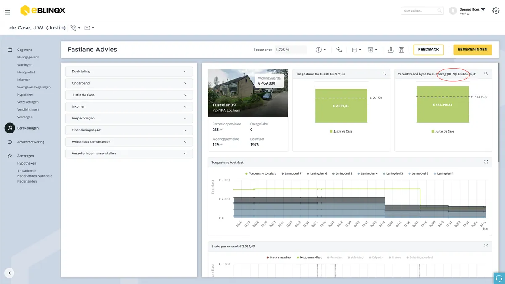
IT-24073: Correctie afkorting bij verantwoord hypotheekbedrag
Bij de doelstelling 'Ontslag uit hoofdelijke aansprakelijkheid' werd rechtsboven in de staafdiagram bij het verantwoord hypotheekbedrag onterecht de afkorting (WLB) getoond. Dit kon de indruk wekken dat het bedrag gebaseerd was op een werkelijke lasten berekening, terwijl in werkelijkheid getoetst wordt tegen de beheernormen. Met deze update is de afkorting aangepast naar (BHN), zodat de terminologie correct en eenduidig is.
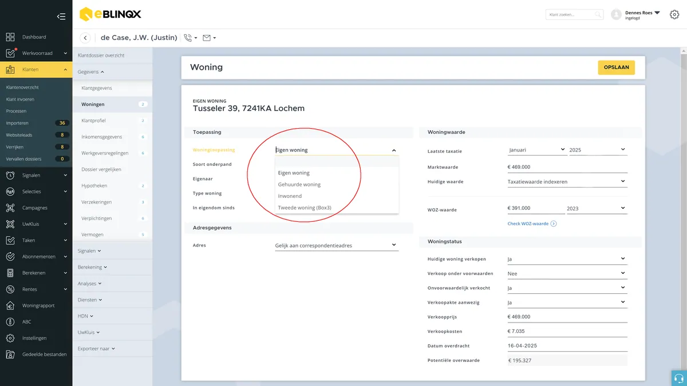
IT-24148: Uitbreiding Woningtoepassing
We hebben de extra optie 'Tweede woning (Box 3) aan Woningtoepassing toegevoegd. Met deze uitbreiding wordt het mogelijk om situaties waarin een tweede woning aanwezig is nauwkeuriger vast te leggen. De keuzes zijn nu:
-
Eigen woning
-
Gehuurde woning
-
Inwonend
-
Tweede woning (Box 3)
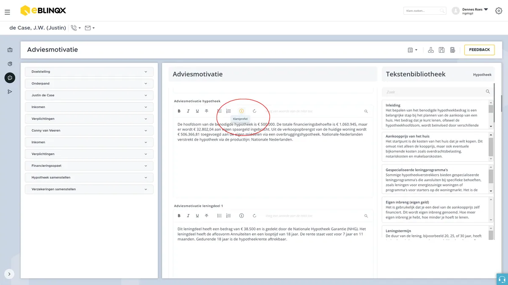
Klantprofiel - Weergave geselecteerd onderdeel in adviesmotivatie
In deze release hebben we een verbeterde functionaliteit toegevoegd aan de adviesmotivatie. Bij elk onderwerp in de adviesmotivatie wordt nu een referentie naar het klantprofiel weergegeven. Dit stelt adviseurs in staat om beter inzicht te krijgen in de reden achter specifieke keuzes, gebaseerd op de unieke situatie van de klant. Deze verbetering zorgt voor meer transparantie en maakt het adviesproces efficiënter en klantgerichter.
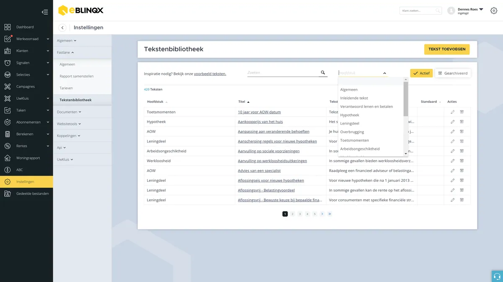
IT-23480: Tekstenbibliotheek -> Hoofdstukken hernoemen
In deze release hebben we de hoofdstukken in de tekstenbibliotheek aangepast om de gebruiksvriendelijkheid te verbeteren. De tekst ‘Adviesmotivatie’ is overal verwijderd uit de hoofdstuktitels. Voorbeelden van wijzigingen:
- ‘Adviesmotivatie Overlijden’ is hernoemd naar ‘Overlijden’.
- ‘Adviesmotivatie AOW’ is hernoemd naar ‘AOW’.
Met deze wijziging wordt het zoeken naar het gewenste thema sneller en eenvoudiger.
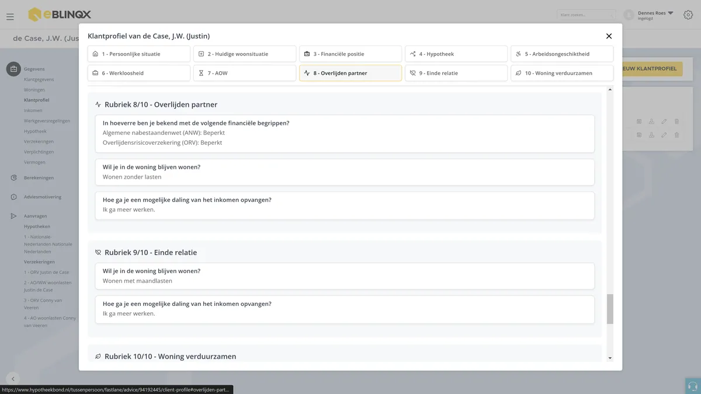
IT-23610: PDF-preview direct in het klantprofiel! 🎉
We hebben een veelgevraagde verbetering doorgevoerd: vanaf nu kun je een PDF direct bekijken in het klantprofiel, zonder deze eerst te hoeven downloaden. Wat betekent dit voor jou?
- Sneller werken: Bekijk vragen en antwoorden direct in de preview, zonder extra stappen.
- Gebruiksvriendelijk: Geen gedoe meer met het openen van gedownloade bestanden. Alles overzichtelijk op één plek.
- Efficiëntie: Meer tijd om je te richten op je klanten, minder tijd kwijt aan technische handelingen.
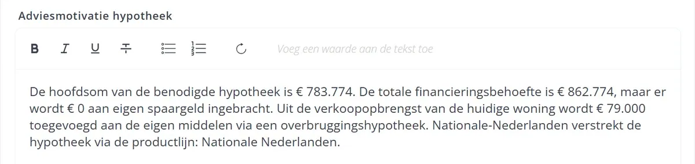
IT-23276: Automatische motivatie voor inbreng eigen geld via overbruggingshypotheek
Vanaf deze release wordt de motivatie voor het in te brengen eigen geld via een overbruggingshypotheek automatisch gegenereerd in het adviesrapport. Hierdoor wordt het advies helderder en vollediger weergegeven. Voorheen werd enkel vermeld dat er geen eigen geld werd ingebracht. Nu wordt ook de inbreng van eigen middelen via een overbruggingshypotheek gespecificeerd.
Voorbeeld van de wijziging:
- Oud: "De totale financieringsbehoefte is € 862.774, maar er wordt € 0 aan eigen geld ingebracht."
- Nieuw: "De totale financieringsbehoefte is € 862.774, maar er wordt € 0 aan eigen spaargeld ingebracht. Uit de verkoopopbrengst van de huidige woning wordt € 79.000 toegevoegd aan de eigen middelen via een overbruggingshypotheek."
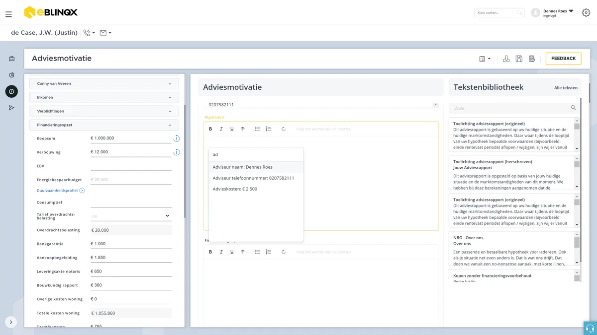
Vanaf nu is het nog gemakkelijker om jouw advies passend te motiveren. In het motivatieveld van jouw keuze kun je simpelweg een / typen, waarna direct de dynamische velden uit jouw berekening worden weergegeven. Door de eerste letters van het gewenste onderwerp te typen, verschijnen automatisch de relevante velden die je nodig hebt.
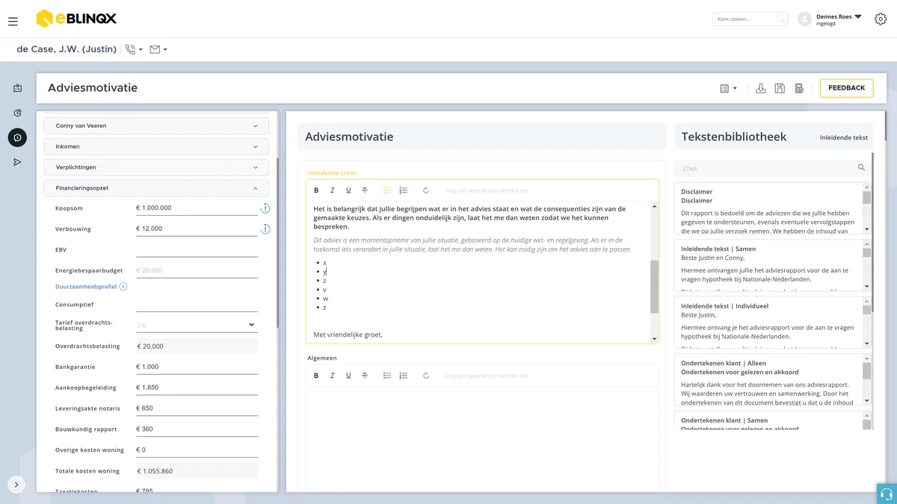
We hebben diverse verbeteringen doorgevoerd aan de teksteditor om het gebruiksvriendelijker te maken:
- Een enter voegt niet langer automatisch een tussenregel toe.
- Het scherm verspringt niet meer wanneer je een opsomming toevoegt.
- Het aanpassen van opmaak zoals vetgedrukte of onderstreepte tekst is eenvoudiger gemaakt.
- Daarnaast is er nu een optie toegevoegd om het lettertype aan te passen.
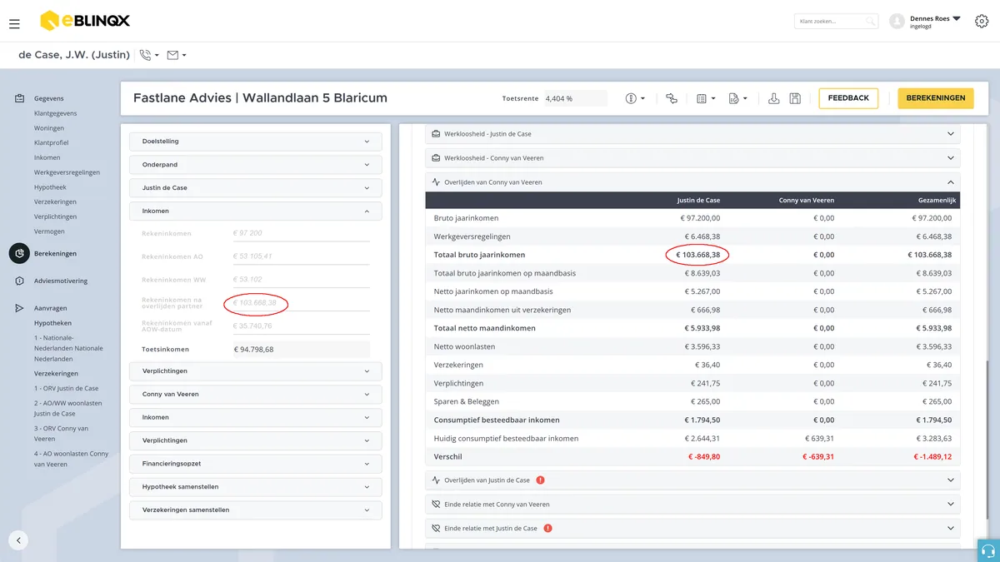
IT-23530: Correcte weergave nabestaandenpensioen in de sidebar
We hebben een probleem opgelost waarbij het nabestaandenpensioen (NP) van de partner en aanvrager in de sidebar onjuist werd weergegeven. Het rekengedeelte was al correct. Vanaf deze release is ook het visuele gedeelte in de sidebar volledig in overeenstemming met het rekengedeelte. Hierdoor wordt het NP nu correct weergegeven, zodat duidelijk is welk NP bij de aanvrager en welk bij de partner hoort.
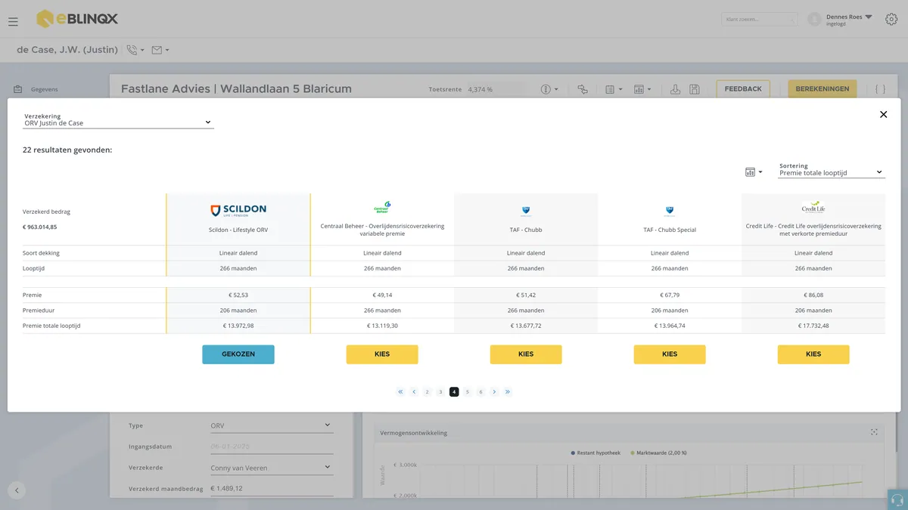
IT-22787: Probleem met het verdwijnen verzekeraars opgelost
We hebben een probleem opgelost waarbij bepaalde aanbieders van overlijdensrisicoverzekeringen, niet langer zichtbaar waren na het gebruik van de ORV-vergelijker in eBlinqx Hypotheekadvies. Het probleem trad op onder specifieke omstandigheden:
- Na het invoeren van gegevens bij een overlijdensrisicoverzekering (ORV) en het bekijken van aanbieders via de vergelijkfunctie.
- Wanneer een aanbieder, zoals Dazure Goedidee Light, werd geselecteerd en de vergelijker werd gesloten, bleven soms alleen TAFF en NN zichtbaar in het vakje 'Aanbieder' in de sidebar.
Dit probleem is inmiddels verholpen en de fix is live gezet. Vanaf nu worden alle aanbieders correct weergegeven in de vergelijker en het keuzemenu, ongeacht de ingevoerde gegevens of de stappen die je doorloopt.
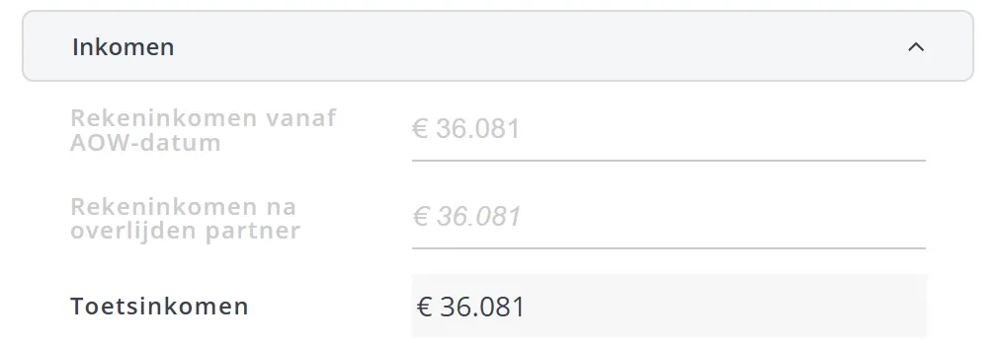
IT-22787: Rekeninkomen na overlijden partner vanaf AOW-leeftijd
Vanaf deze release wordt het proces rondom het invullen van het rekeninkomen na het overlijden van de partner vereenvoudigd voor consumenten die de AOW-leeftijd hebben bereikt of gepasseerd. Het rekeninkomen wordt nu automatisch geprefilled, waardoor handmatige invoer niet meer nodig is. Dit bespaart tijd en minimaliseert de kans op fouten.
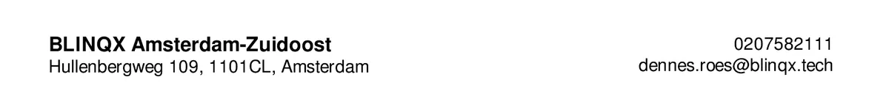
IT-23109: Vestigingsplaats en postcode van de adviseur toegevoegd op de cover
We hebben een verbetering doorgevoerd in de weergave van adresgegevens op de cover. Voorheen werd alleen het adres van de adviseur vermeld. Vanaf nu worden ook de postcode en vestigingsplaats toegevoegd, zoals in bovenstaand voorbeeld. Deze wijziging zorgt voor een vollediger en professioneler adresoverzicht, wat de duidelijkheid voor klanten vergroot. Bedankt voor jullie feedback!
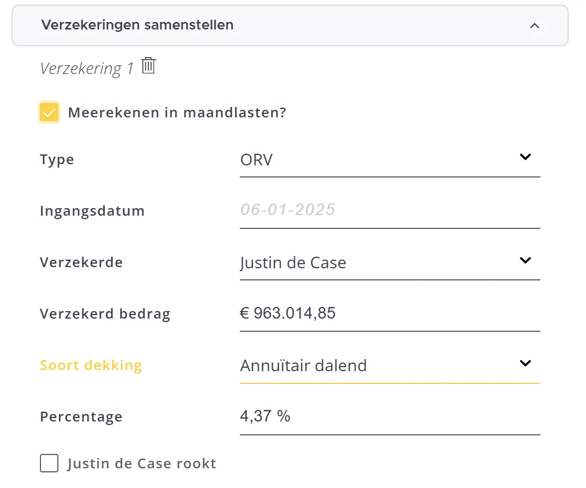
IT-23508: ORV op basis van toetsrente - Percentage wordt nu correct vastgehouden
We hebben een probleem opgelost waarbij het door de adviseur aangepaste annuïtair dalende percentage voor een ORV niet werd vastgehouden door eBlinqx Hypotheekadvies. Vanaf nu slaat eBlinqx Hypotheekadvies het aangepaste percentage correct op en blijft deze instelling behouden, ook wanneer de adviseur later terugkomt in de berekening.
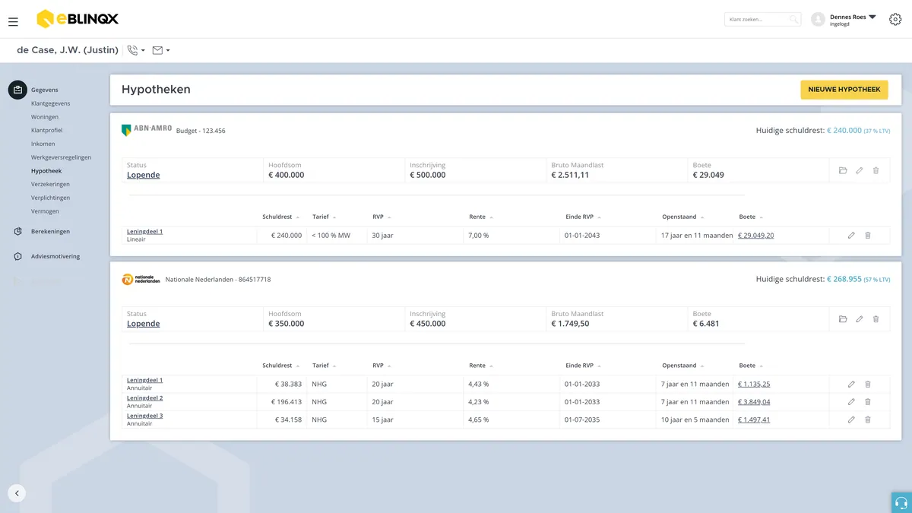
IT-23534: Hoofdhypotheek altijd bovenaan in het overzicht
Om de gebruiksvriendelijkheid voor adviseurs te vergroten, wordt de hoofdhypotheek voortaan altijd bovenaan weergegeven in het overzicht van hypotheken. Adviseurs kunnen de hoofdhypotheek direct herkennen zonder deze afzonderlijk te hoeven openen. Dit maakt het sneller en eenvoudiger voor adviseurs om de belangrijkste hypotheek in een oogopslag te identificeren en erop in te spelen.
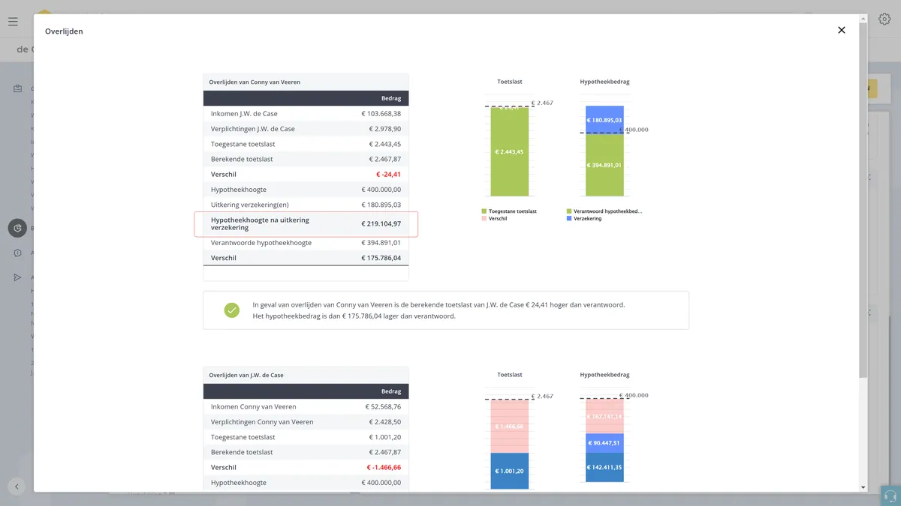
IT-23151: Hypotheekhoogte na uitkering bestaande verzekering
We hebben een extra regel toegevoegd aan het verdiepende scherm bij het thema 'Overlijden partner'. De nieuwe regel, genaamd 'Hypotheekhoogte na uitkering bestaande verzekering', maakt het nu eenvoudig om in één oogopslag te zien wat de resterende hypotheekhoogte is na een uitkering van een bestaande verzekering. Hierdoor kan de adviseur direct beoordelen of er nog aanvullende dekking nodig is om tot een passend advies te komen. Deze toevoeging zorgt voor meer inzicht en ondersteunt een efficiëntere adviespraktijk.
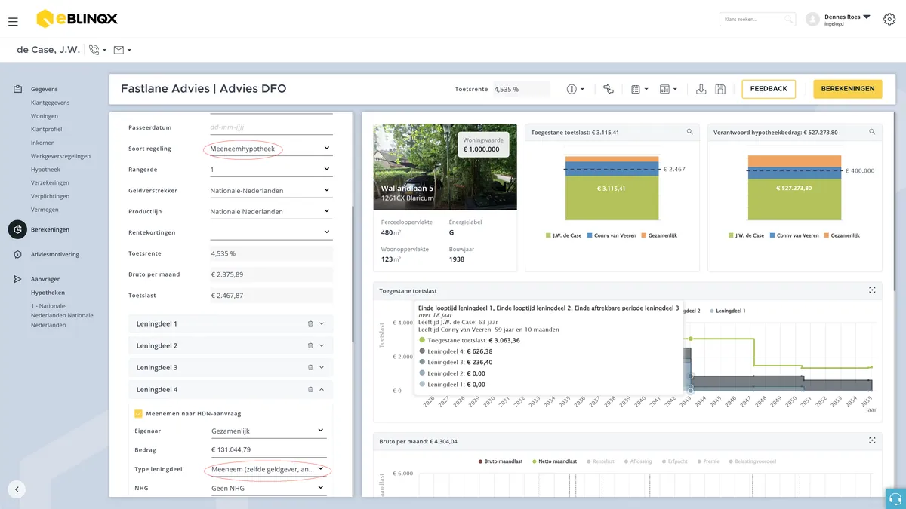
IT-22205: Opgelost: Leningdeelbedrag verdwijnt bij hypotheek samenstellen
We hebben een probleem opgelost waarbij het toe te voegen leningdeelbedrag onbedoeld verdween bij het samenstellen van een hypotheek met de doelstelling 'Bestaande woning kopen'. Specifiek trad dit probleem op wanneer een hoger hypotheekbedrag moest worden geleend en je tijdens het kiezen van het soort regeling en het toevoegen van een eerste leningdeel koos voor een meeneemregeling. Het leningdeelbedrag werd onterecht opgeteld bij het eigen geld, waardoor de informatie niet correct werd weergegeven. Met deze update blijft het leningdeelbedrag correct zichtbaar en kan het proces soepel worden doorlopen. Bedankt voor jullie geduld en feedback!
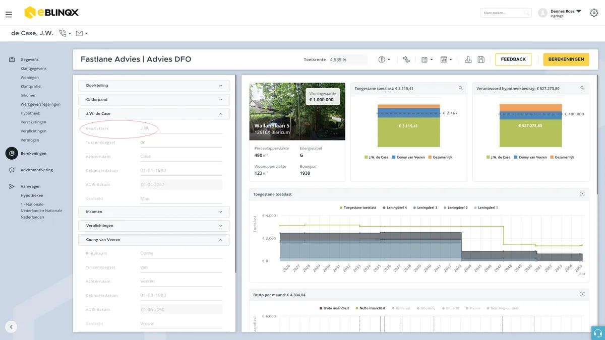
IT-23256: Voorletters toegevoegd aan de sidebar in eBlinqx Hypotheekadvies (Berekeningen)
Vanaf deze release worden de voorletters van klanten weergegeven in de sidebar bij berekeningen, wanneer roepnamen of voornamen niet beschikbaar zijn in het dossier. Deze toevoeging zorgt ervoor dat klanten eenvoudiger en sneller geïdentificeerd kunnen worden, zelfs wanneer er beperkte informatie beschikbaar is. Met deze verbetering bieden we een vollediger klantoverzicht en maken we het proces efficiënter en gebruiksvriendelijker.
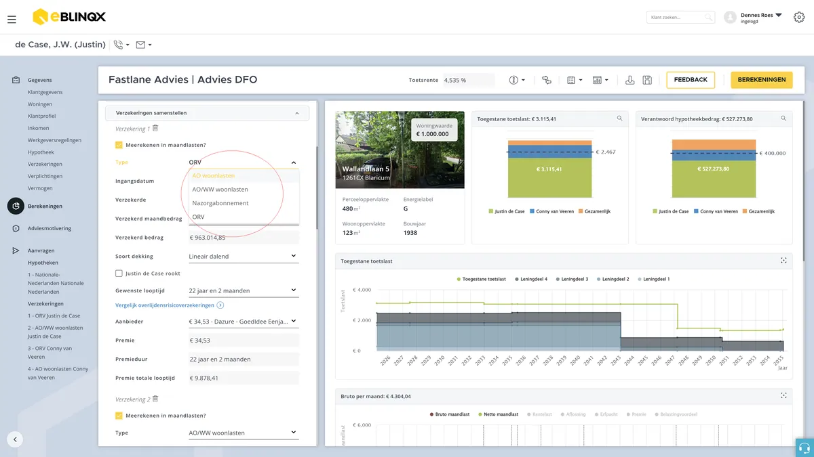
IT-22895: Verbetering in de Sidebar bij 'Verzekeringen Samenstellen'
We hebben de opties onder ‘Type’ in de sidebar van het onderdeel ‘Verzekeringen samenstellen’ geoptimaliseerd. Het aantal beschikbare keuzes is teruggebracht om het overzicht te verbeteren en de gebruikerservaring te vereenvoudigen.
De nieuwe opties zijn:
- AO Compleet
- AO Compleet + Werkloosheid
- ORV
- Serviceabonnement
Daarnaast hebben we de termen hernoemd en alfabetisch gesorteerd, zodat je nog sneller de juiste keuze kunt vinden.
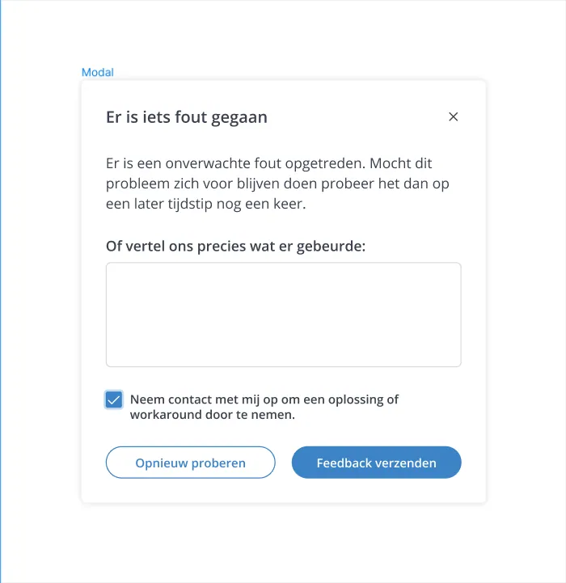
IT-15915: Feedback optie toegevoegd aan foutmelding modal
We hebben een nieuwe functionaliteit toegevoegd aan de foutmelding modal: adviseurs kunnen nu direct feedback achterlaten wanneer een foutmelding verschijnt. Met deze aanpassing willen we het voor gebruikers makkelijker maken om waardevolle feedback te geven, zodat we onze processen en functionaliteiten sneller kunnen verbeteren.
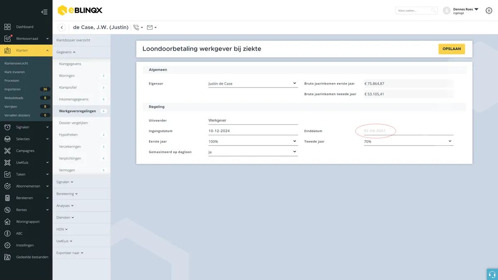
IT-16595: Verbetering aan loondoorbetaling bij ziekte
Vanaf nu vullen we automatisch de einddatum in bij ‘Loondoorbetaling bij ziekte’ met de AOW-datum van de klant. Dit bespaart tijd en vermindert de kans op fouten bij het invoeren van gegevens. Dankzij deze aanpassing wordt het proces efficiënter en bieden we een gebruiksvriendelijkere ervaring.
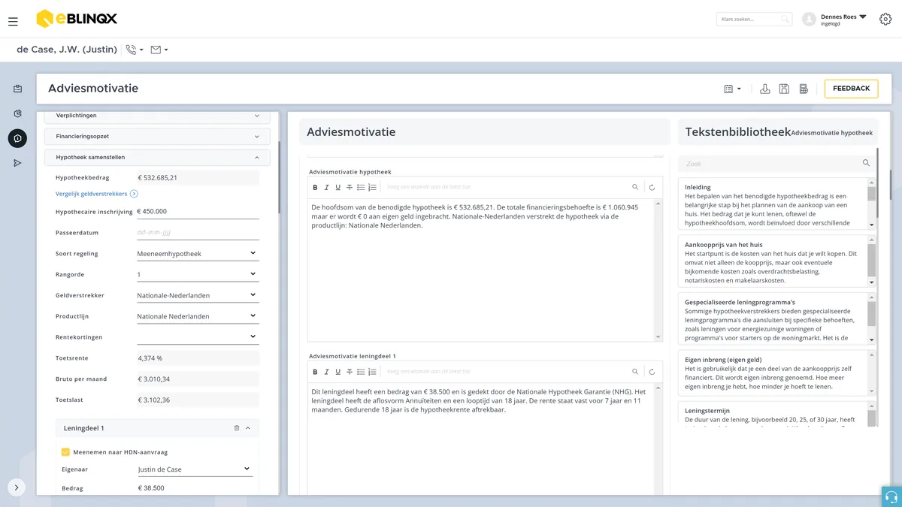
IT-22824: Inventarisatie, hypotheekconstructie en verzekeringsoplossing in adviesmotivering
We introduceren een belangrijke uitbreiding in het adviesproces! Vanaf nu zijn de volgende onderdelen beschikbaar binnen de Adviesmotivering: Inventarisatie, Hypotheekconstructie: en Verzekeringsoplossing. Deze verbeteringen maken het adviesproces vollediger en zorgen voor een nóg betere onderbouwing van het advies aan de klant.
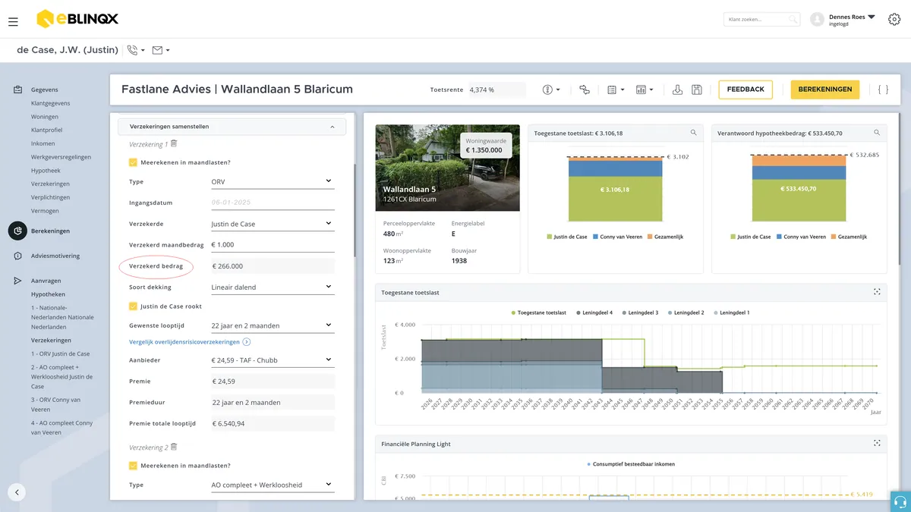
IT-22934: Gewenste dekking -> Verzekerd bedrag
In deze release hebben we de termen die worden gebruikt in het aanvraagproces verduidelijkt om de gebruiksvriendelijkheid te vergroten: "Gewenste dekking aanvrager" wordt voortaan weergegeven als "Verzekerd bedrag (voornaam aanvrager)". "Gewenste dekking mede-aanvrager" wordt gewijzigd naar "Verzekerd bedrag (voornaam partner)". Deze aanpassingen zorgen ervoor dat de benaming beter aansluit bij de context en helderheid biedt voor zowel de aanvrager als de mede-aanvrager.
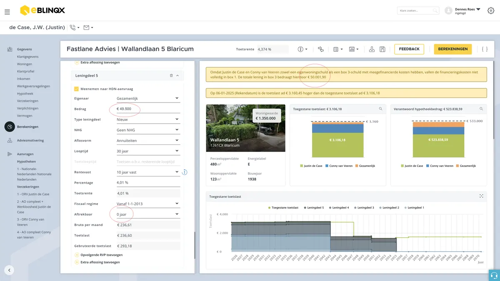
IT-22318: Aanpassing verwerking eigenwoningschuld en financieringskosten
De verwerking van financieringskosten bij een eigenwoningschuld (box 1) en een schuld in box 3 is aangepast naar aanleiding van een verduidelijking door de Kennisgroep van de Belastingdienst. De belangrijkste punten zijn:
-
Verdeling van financieringskosten
-
Wanneer een belastingplichtige zowel een eigenwoningschuld (box 1) als een schuld in box 3 aangaat, worden de financieringskosten niet volledig toegerekend aan box 1.
-
De adviseur moet de juiste verhouding berekenen tussen de maximale eigenwoningschuld en de totale lening zonder financieringskosten.
-
-
Nieuwe interpretatie door de Kennisgroep
-
De Kennisgroep van de Belastingdienst heeft een afwijkende uitleg gegeven ten opzichte van de eerdere interpretatie van de wetgever. Deze uitleg dient nu als leidraad voor de berekeningen.
-
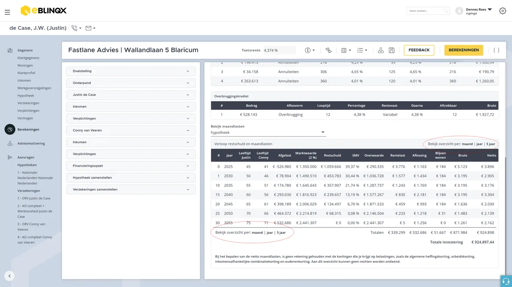
IT-18499: Aanpassing financieringsopzet
We hebben een update doorgevoerd aan de Financieringsopzet-sectie om de gebruiksvriendelijkheid te verbeteren. De volgende wijzigingen zijn gemaakt:
-
Keuze voor restschuld en maandlasten verplaatst
-
De opties voor het verloop van de restschuld en maandlasten wordt nu ook bovenaan weergegeven, in plaats van alleen onderaan. Dit zorgt voor een meer intuïtieve navigatie en maakt het eenvoudiger om keuzes snel te vinden en te selecteren.
-
-
Snellere optie-aanpassing
-
Als je een keuze maakt, bijvoorbeeld voor "maand", en daarna wilt terugkeren naar een kortere optie, staan de relevante opties nu direct bovenaan in plaats van onderaan de lijst met 360 termijnen. Dit vermindert scrollen en verhoogt het gebruiksgemak.
-
Waarom deze aanpassing? Deze wijzigingen zijn aangebracht op basis van feedback van gebruikers. Het doel is om de navigatie binnen de Financieringsopzet-sectie efficiënter te maken, wat resulteert in een betere ervaring voor klanten en adviseurs.
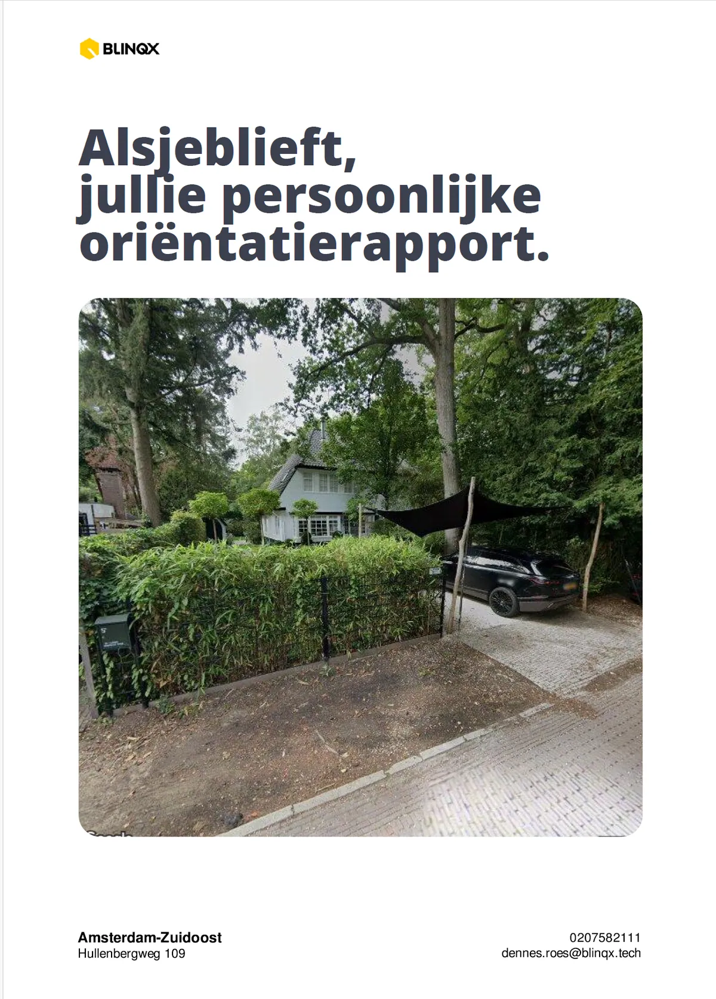
IT-23479: Standaard sjabloon Oriëntatierapport
We introduceren een standaard sjabloon voor het Oriëntatierapport, dat beschikbaar wordt gesteld voor alle kantoren. Dit sjabloon bevat de volgende pagina’s:
-
Voorblad
-
Samenvatting
-
Financieringsopzet
-
Verantwoord blijven wonen
Belangrijkste kenmerken
-
Automatische aanpassing van het Voorblad De tekst op het voorblad wordt automatisch aangepast op basis van de situatie van de klant:
-
Voor individuele klanten: “Alsjeblieft, jouw persoonlijke oriëntatierapport”.
-
Voor samenwonende stellen: “Alsjeblieft, jullie persoonlijke oriëntatierapport”.
-
-
Juridische duidelijkheid
-
Het sjabloon benadrukt het belang van het vastleggen van de startmomenten van het oriëntatietraject en het adviestraject.
-
Waarom deze aanpassing? Het standaardiseren van het Oriëntatierapport biedt voordelen zoals:
-
Consistentie in presentatie en inhoud.
-
Efficiëntere werkwijze voor alle kantoren.
-
Verbeterde klantervaring dankzij duidelijke en gepersonaliseerde communicatie.
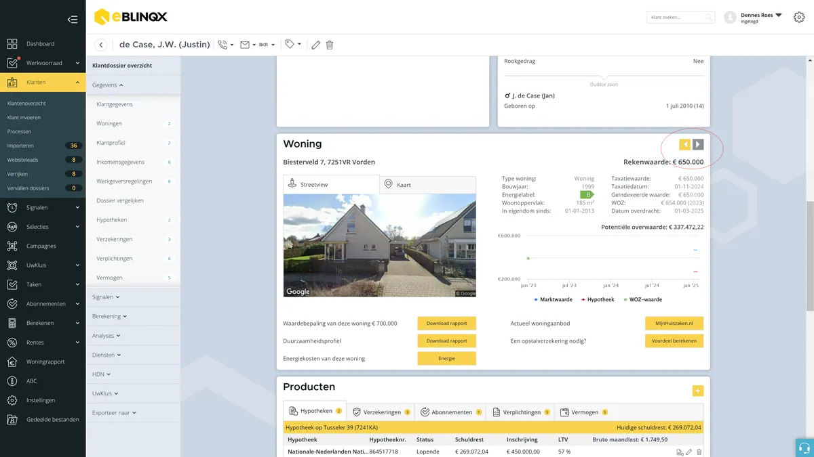
IT-22901: Meerdere onderpanden in beeld
Vanaf nu is het mogelijk om meerdere onderpanden te bekijken en hier eenvoudig doorheen te swipen. Deze nieuwe functionaliteit maakt het navigeren door de details van verschillende onderpanden sneller en gebruiksvriendelijker.
Met een intuïtieve swipe-beweging kun je snel schakelen tussen de onderpanden, zodat je alle relevante informatie overzichtelijk en direct binnen handbereik hebt. Dit zorgt voor een soepelere ervaring en meer gemak bij het beoordelen van meerdere objecten.
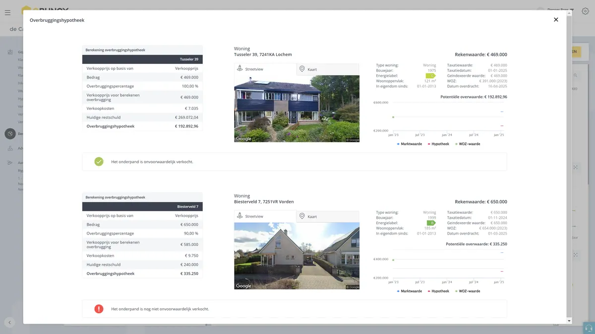
IT-22901: Overbruggen op twee onderpanden
We introduceren een verdiepend scherm waarin duidelijk wordt weergegeven hoe het voorgestelde bedrag voor de overbruggingshypotheek tot stand komt. Dit biedt meer transparantie en inzicht voor onze gebruikers. De berekening wordt gepresenteerd op basis van de situatie van het pand:
-
Pand onvoorwaardelijk verkocht
Het voorgestelde bedrag wordt als volgt berekend:
Verkoopprijs - Verkoopkosten - Restant hypotheek = Overbruggingshypotheek -
Pand niet onvoorwaardelijk verkocht
In dit geval geldt de volgende berekening:
(Verkoopprijs x 90%) - Verkoopkosten - Restant hypotheek = Overbruggingshypotheek
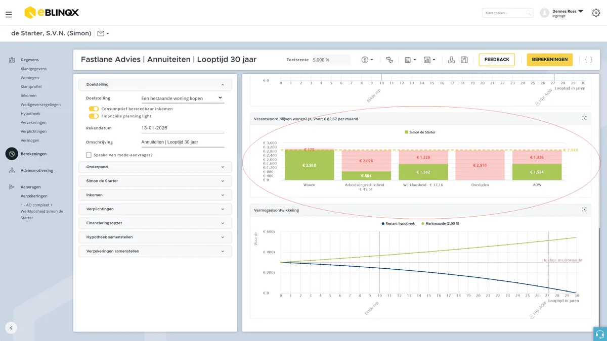
IT-20980: Fix voor staafdiagrammen bij 'Verantwoord blijven wonen'
Bij adviesrapporten gebaseerd op GHF-normen voor alleenstaanden kwamen de staafdiagrammen in het onderdeel 'Verantwoord blijven wonen' niet correct tot uiting. Dit probleem is nu verholpen. De staafdiagrammen worden nu consistent en correct weergegeven op het scherm en in het adviesrapport. Alleenstaanden krijgen hiermee een duidelijke visuele weergave van de financiële situatie en haalbaarheid volgens de GHF-normen.
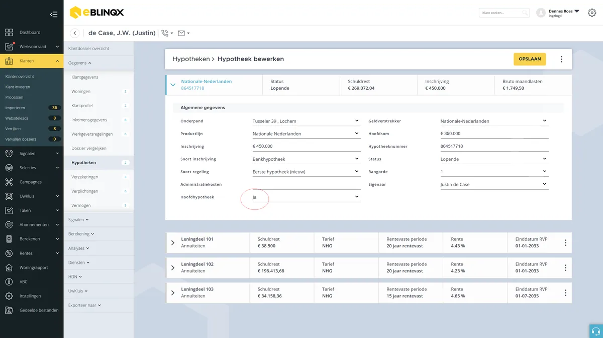
IT-23343: Hoofdhypotheek (ja/nee)
In het onderdeel 'Hypotheken' binnen de inventarisatie is het nu mogelijk om één van de lopende hypotheken te markeren als hoofdhypotheek.
Wat houdt dit in?
-
Bij het meeverhuizen van de hoofdhypotheek:
- De geldverstrekker en het product van de hoofdhypotheek worden leidend in de nieuwe hypotheekconstructie.
- De volgende gegevens worden één-op-één overgenomen:
- Hoogte van de leningdelen.
- Restant looptijd van de leningdelen.
- Resterende renteaftrek van de leningdelen.
- Huidige hypotheekrente.
-
Bij een eventuele tweede hypotheek:
- Alleen de hoogte van de leningdelen, de restant looptijd, en de resterende renteaftrek worden overgenomen.
- De geldverstrekker en het product worden niet meegenomen naar de nieuwe constructie.
Met deze release leggen we een solide basis voor de ondersteuning van complexe fiscale hypotheekconstructies. Verdere uitbreidingen en verbeteringen zullen in toekomstige updates volgen.
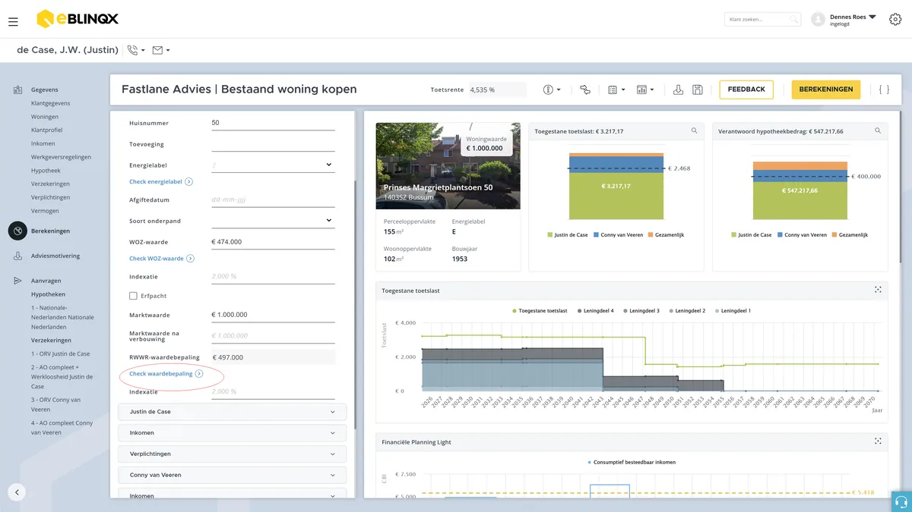
IT-23227: Verbetering bij "Check waardebepaling" functionaliteit
We hebben de functionaliteit verbeterd rondom het veld RWWR-waarde in het advies- en oriëntatieproces:
- Wanneer je klikt op "Check waardebepaling" en een postcode, huisnummer en eventuele toevoeging zijn ingevuld, worden deze gegevens nu automatisch geprefilld.
- Daarnaast hebben we een extra stap toegevoegd: na het prefillen wordt direct een rapport gegenereerd en beschikbaar gesteld voor download.
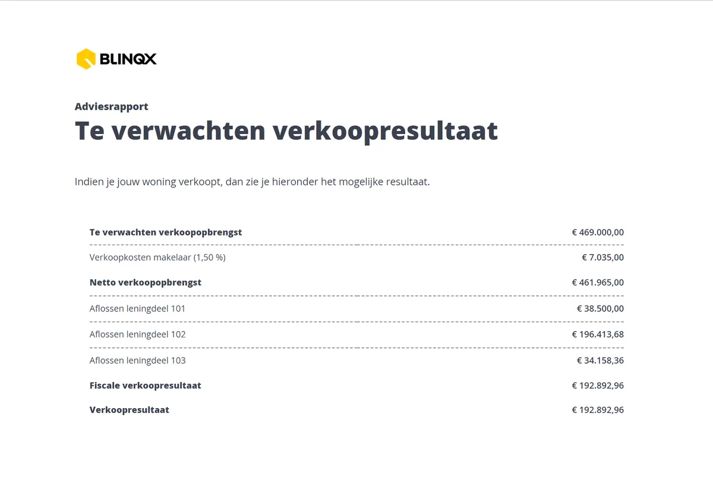
We hebben een correctie doorgevoerd in het adviesrapport bij het onderdeel 'Te verwachten verkoopresultaat'.
- Voorheen werd het te verwachten verkoopresultaat berekend op basis van 90% van de marktwaarde.
- Dit is nu aangepast naar 100%, zodat het weergegeven bedrag volledig overeenkomt met de te verwachten verkoopopbrengst.
Met deze wijziging sluiten we beter aan bij de verwachtingen en bieden we een nauwkeurigere weergave van de verkoopopbrengst.
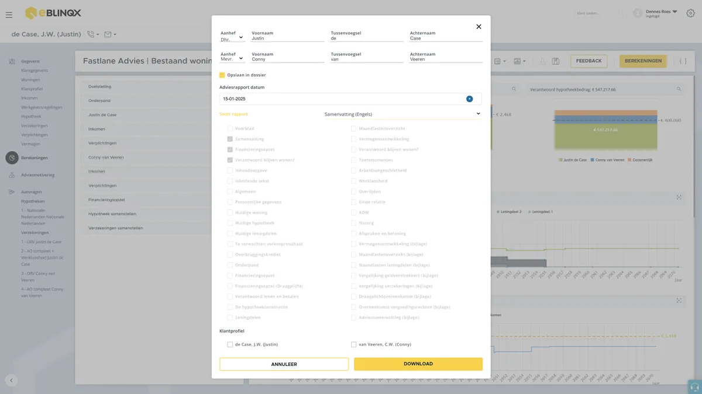
IT18983: Samenvatting Engels
Bij het downloaden van een rapportage verschijnt voortaan een modal met verschillende templates, waaronder "Samenvatting in het Engels". Om verwarring te voorkomen, hebben we de gebruikservaring verbeterd:
- Wanneer het template "Samenvatting in het Engels" wordt geselecteerd, blijven enkel de drie standaard Engelse pagina's beschikbaar.
- Overige opties worden automatisch uitgegrijsd om te voorkomen dat aanvullende pagina's in een andere taal worden toegevoegd.
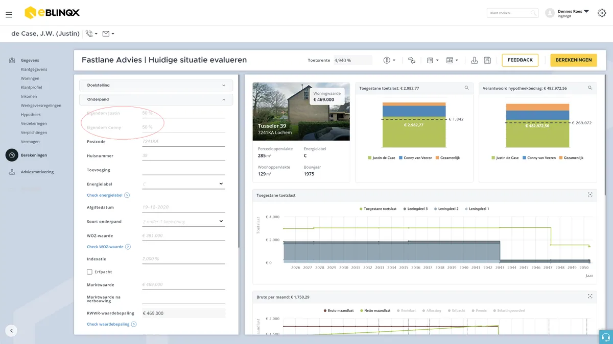
Eigendomsverhouding onderpand
Vanaf deze release gaan wij bij alle doelstellingen in eBlinqx Hypotheekadvies, de eigendomsverhouding van het onderpand toevoegen en prefillen de inhoud hiervan met de eigendomsverhouding zoals aangegeven in de inventarisatie c.q. database.
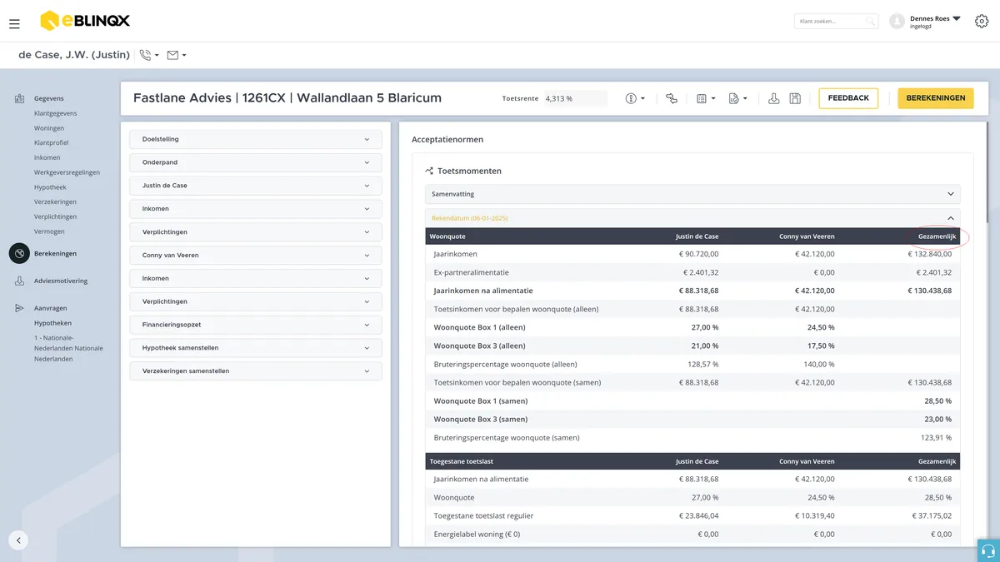
IT-23188: Samen wordt gezamenlijk
Wij hebben de term ‘Samen’ in de acceptatienormen aangepast in ‘Gezamenlijk’, zodat wij nu overal in de software dezelfde terminologie hanteren.
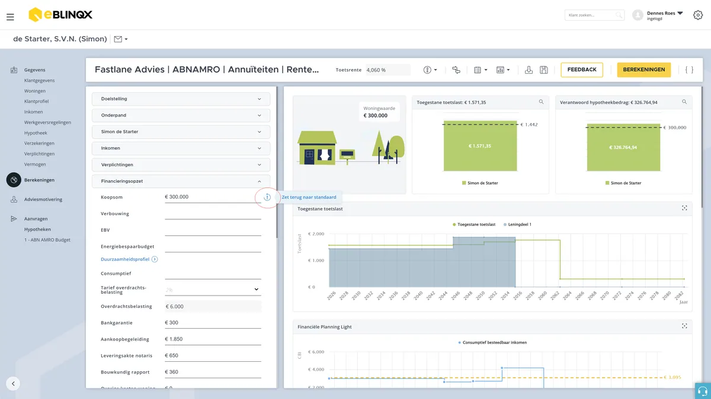
IT-18745: Tooltip
Wij hebben het blauwe cirkeltje in de eBlinqx Hypotheekadvies vervangen door een tooltip. Het was voor de adviseurs niet altijd duidelijk genoeg dat, door hierop te klikken, eBlinqx Hypotheekadvies terug grijpt naar de standaard c.q. default instelling.
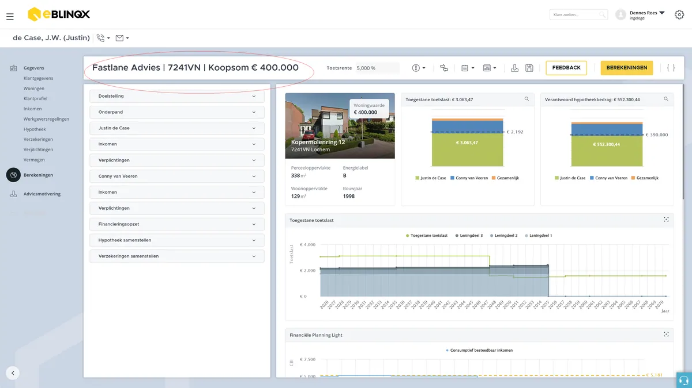
IT-23352: Uitbreiding titel: 'Fastlane Advies' met omschrijving
Vanaf nu wordt de titel 'Fastlane Advies' uitgebreid met een omschrijving van de specifieke berekening waarmee je werkt. Deze aanpassing maakt het direct inzichtelijk om welke berekening het gaat, zonder dat je extra stappen hoeft te ondernemen.
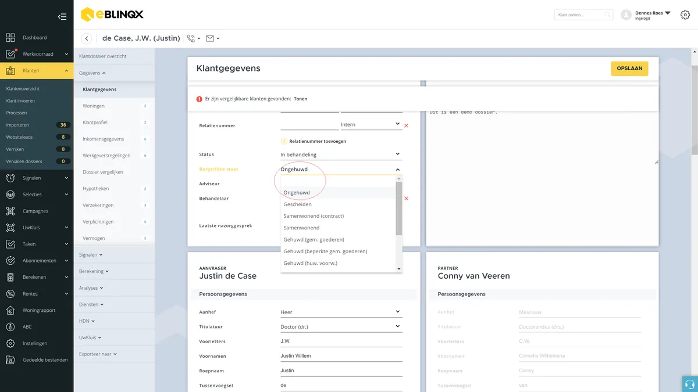
IT-23046: 'Alleenstaande' wordt 'Ongehuwd'
Vanaf deze release wordt de terminologie voor de burgerlijke staat in ons systeem aangepast. De huidige aanduiding 'Alleenstaande' wordt gewijzigd naar 'Ongehuwd'. Deze wijziging is doorgevoerd om de terminologie beter te laten aansluiten bij de definities en standaarden zoals gehanteerd in de Gemeentelijke Basisadministratie (GBA).
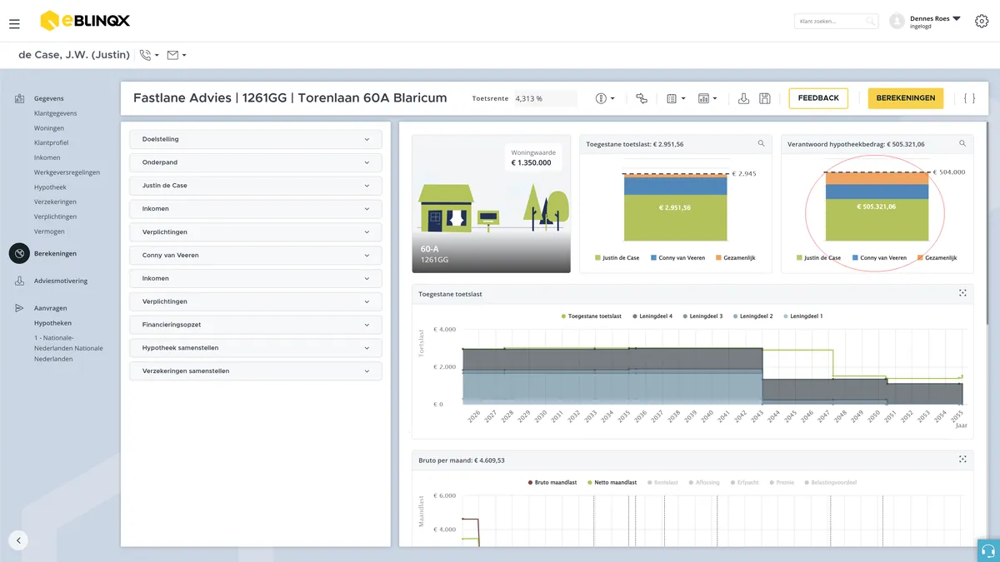
IT-23113: Weergave staafdiagram ‘Verantwoord hypotheekbedrag’
We hebben een aanpassing gedaan aan de weergave van het staafdiagram ‘Verantwoord hypotheekbedrag’. Wanneer de aanvrager en mede-aanvrager een ongeveer gelijk inkomen hebben, wordt de verdeling nu proportioneel weergegeven. De staaf is gelijk verdeeld tussen blauw en groen, passend bij de inkomensverhouding. Het gedeelte oranje (gezamenlijk) wordt alleen toegevoegd wanneer het gezamenlijke bedrag de individuele bijdragen overstijgt. Hierdoor wordt voorkomen dat de oranje kleur de gehele staaf overschaduwt, wat eerder een verkeerde indruk gaf van de verdeling.
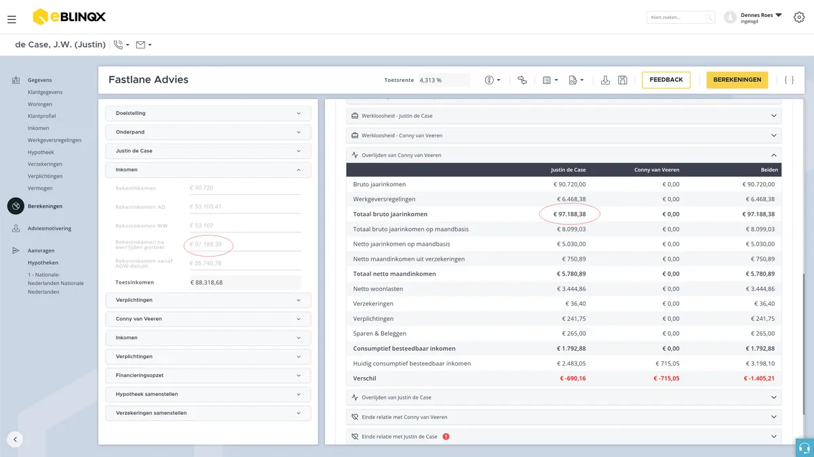
IT-23380: Presentatie rekeninkomen na overlijden partner
In de sidebar van eBlinqx Hypotheekadvies werd het rekeninkomen na het overlijden van de partner onjuist weergegeven, terwijl de berekening zelf wel correct was volgens de acceptatienormen. Dit gebeurde doordat het eigen inkomen onterecht werd gemaximeerd op het maximum dagloon, wat in deze context niet van toepassing was. Het verschil tussen de berekening en de presentatie is inmiddels opgelost (zie screenshot hierboven).
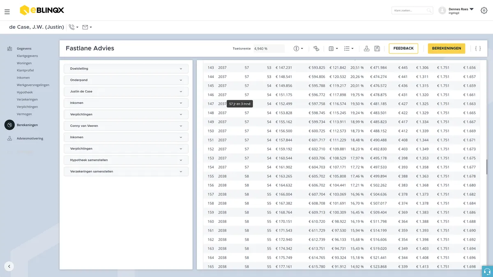
IT-10876: Leeftijd klant op maandbasis in maandlastenoverzicht
We hebben het maandlastenoverzicht verbeterd door de leeftijden van de aanvrager en mede-aanvrager nu ook in maanden weer te geven (bijvoorbeeld 45 jaar en 3 maanden). Bij het hoveren met de muis verschijnt een pop-up met de exacte leeftijd. Dit helpt om nauwkeurig te bepalen wanneer een (mede-)aanvrager binnen 10 jaar van de AOW-leeftijd komt.
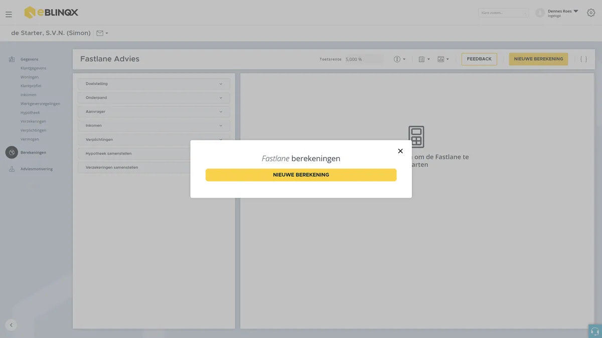
IT-23355: Verbeterde Styling voor Modal 'Berekening Inladen'
We hebben de styling van het modal 'Berekening Inladen' geoptimaliseerd om de gebruikerservaring te verbeteren, met name wanneer er geen berekeningen beschikbaar zijn. Wanneer er geen berekeningen zijn om weer te geven, wordt nu een nette en professionele melding weergegeven. Het modal sluit nu beter aan bij de standaard van het eBlinqx Hypotheekadvies-platform.
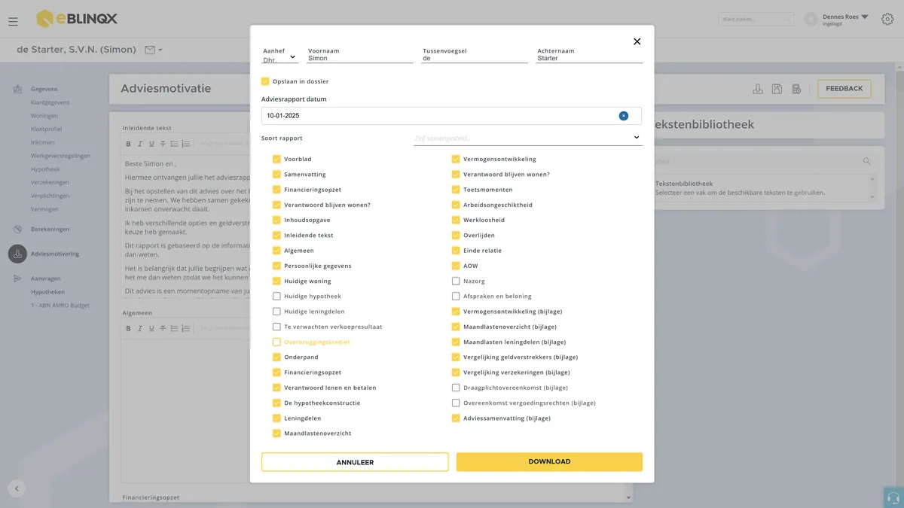
IT-23072: Verbeterde inhoudsopgave in adviesrapporten
We hebben een probleem opgelost met de inhoudsopgave in het adviesrapport. Bij het genereren van een adviesrapport werd de volledige inhoudsopgave weergegeven, zelfs wanneer bepaalde onderdelen waren uitgevinkt. Dit leidde tot een minder overzichtelijk rapport en onnodige inhoud.
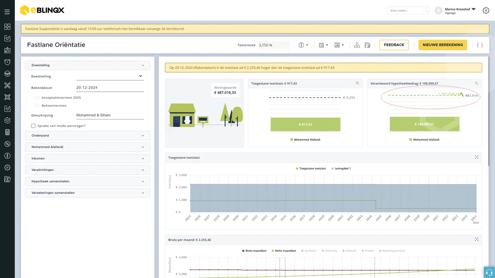
IT-23187: Verbetering staafdiagram 'Verantwoord Hypotheekbedrag'
We hebben een aanpassing doorgevoerd in de staafdiagram bij het onderdeel 'Verantwoord hypotheekbedrag'. De extra groene lijn die de woningwaarde aangaf (zie hierboven), is verwijderd. Deze lijn was een dubbele weergave en zorgde daardoor voor verwarring in de presentatie van de gegevens.
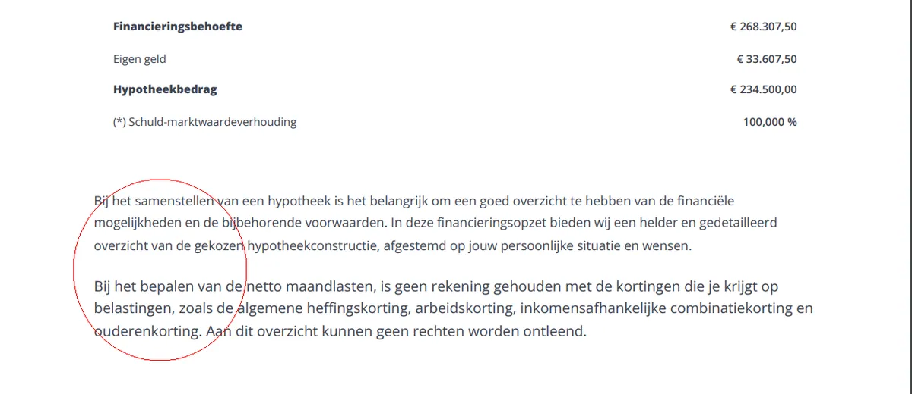
IT-23384: Uniform lettertype in adviesrapporten
Het verschil in lettergrootte (zie hierboven) is opgelost. De lettertypes in het adviesrapport zijn nu volledig consistent en uniform. Dit zorgt ervoor dat elke sectie van het rapport dezelfde visuele uitstraling heeft, ongeacht de inhoud of het type rapportonderdeel.
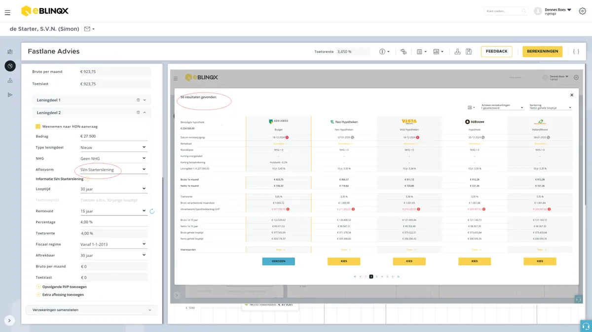
IT-22152: Geldverstrekkers vergelijken met SVn Starterslening
Het is nu mogelijk om geldverstrekkers te vergelijken wanneer er in de hypotheekconstructie een leningdeel is opgenomen met de aflosvorm SVn Starterslening. Dit maakt het vergelijken van financieringsmogelijkheden efficiënter en overzichtelijker.
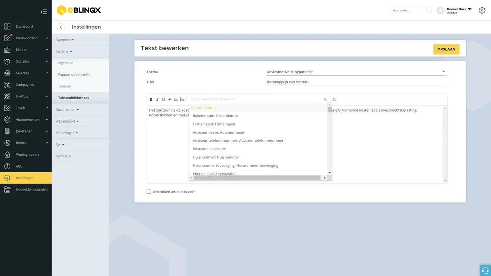
IT-23232: Dynamische velden voor (advies)teksten uitgebreid
Op basis van jullie feedback hebben we de dynamische velden, die nodig zijn voor het aanmaken van (advies)teksten, geoptimaliseerd. De velden zijn nu breder gemaakt, zodat de volledige tekst direct zichtbaar is tijdens het zoeken naar een waarde. Hierdoor is het zoeken en selecteren van de juiste waarde eenvoudiger en sneller geworden.
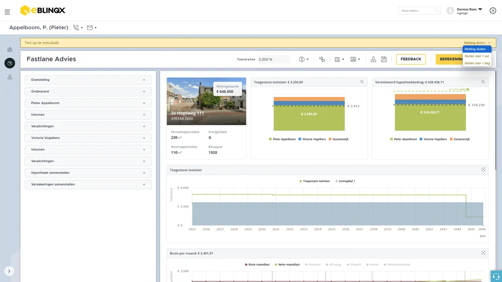
IT-23068: Tijdelijk meldingen verbergen
We hebben een handige nieuwe functionaliteit toegevoegd. Het is vanaf nu mogelijk om meldingen vanuit het Fastlane Team tijdelijk te verbergen met de opties:
- Verbergen voor 1 uur: Ideaal voor een korte focusperiode.
- Verbergen voor 1 dag: Handig als je een hele werkdag zonder onderbrekingen wilt blijven.
De meldingen worden na de ingestelde tijd automatisch weer ingeschakeld, zodat je niets belangrijks mist.
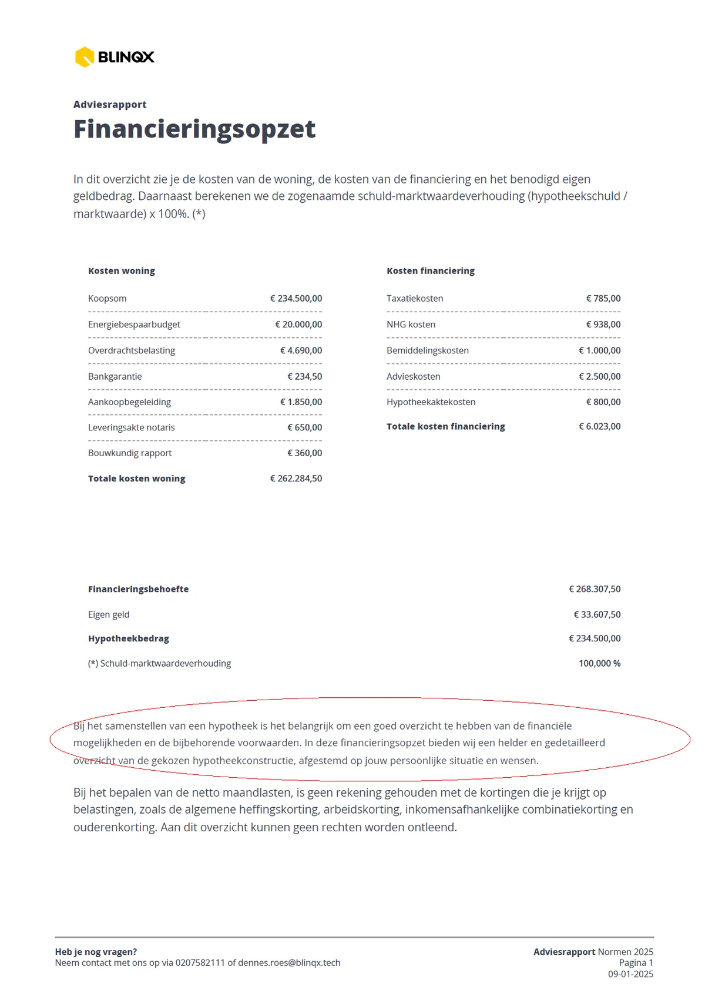
IT-22988: Tekst toevoegen aan de financieringsopzet in het adviesrapport
Vanaf nu is het mogelijk om een aangepaste tekst toe te voegen aan de financieringsopzet in het adviesrapport.
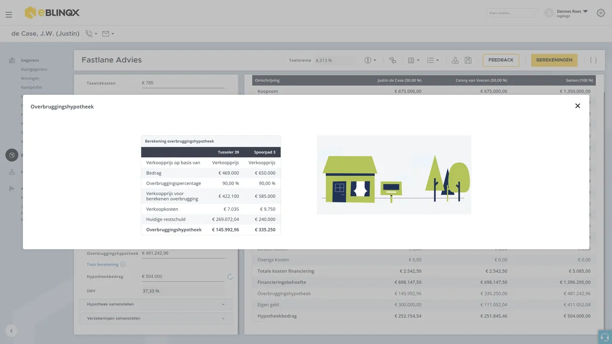
IT-23165: Weergave verkoopwinst en overbruggingshypotheek
In situaties waarin zowel de aanvrager als de partner een eigen woning met bijbehorende hypotheek bezitten en deze woningen nog verkocht moeten worden voor de aankoop van een gezamenlijke woning, wordt de beschikbare informatie voortaan weergegeven in een pop-upscherm.
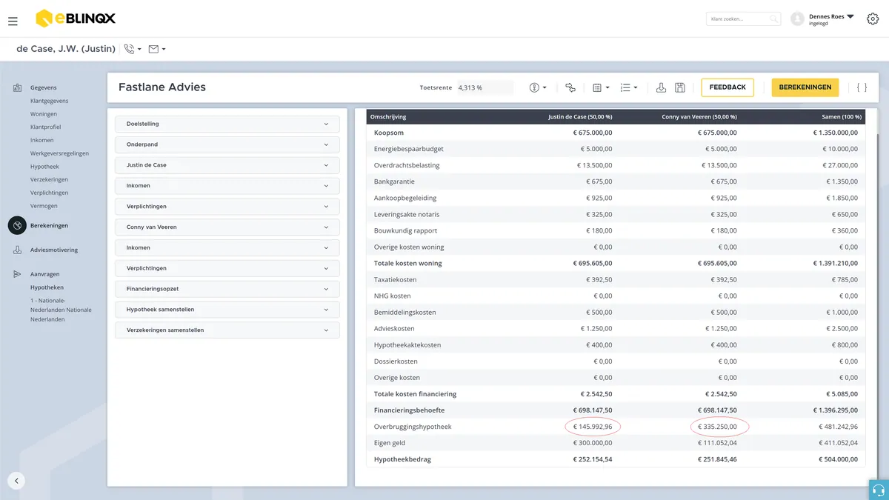
IT-23021: Overbruggingshypotheek in de draagplichtovereenkomst
Als één partij volledig eigenaar is van de huidige woning en de bijbehorende hypotheek, wordt de overbruggingshypotheek volledig aan deze eigenaar toegewezen en op dezelfde wijze opgenomen in de financieringsopzet voor de draagplichtovereenkomst.
IT-23078: Financieringsopzet (Draagplicht) gekoppeld aan de doelstelling 'Mijn woning verbouwen'
Met deze release hebben we de financieringsopzet (Draagplicht) uitgebreid en gekoppeld aan de doelstelling 'Mijn woning verbouwen'. Dit betekent dat gebruikers nu meer flexibiliteit en inzicht krijgen bij het plannen van financieringen voor woningverbeteringen.
IT-23250: Twee cijfers achter de komma in de financieringsopzet
We hebben een update doorgevoerd om de afronding in de financieringsopzet en financieringsopzet draagplichtovereenkomst te verbeteren. Vanaf nu wordt overal in het scherm gewerkt met twee cijfers achter de komma, net zoals we dit al doen in de output. Dit zorgt voor Consistentie tussen de weergave op het scherm en in de documenten en een duidelijkere presentatie van bedragen, zonder afrondingsverschillen. Dankzij deze aanpassing is het eenvoudiger om met de getoonde data te werken en sluiten schermweergave en output beter op elkaar aan.
IT-19999: Fix voor weergave en opslag van eigen geldbedrag
We hebben een fout opgelost in de weergave van het eigen geldbedrag in eBlinqx Hypotheekadvies! Voorheen kon het voorkomen dat, wanneer het benodigde eigen geldbedrag € 0,00 was of één van beide partners geen eigen geld inbracht, de waarde als NaN werd weergegeven. Dit zorgde voor verwarring en inconsistente opslag. Met deze update: Wordt € 0,00 altijd correct weergegeven in plaats van NaN en wordt dit bedrag netjes vastgehouden en correct opgeslagen in het dossier.
IT-23259: Automatische berekening van eigendomsverhoudingen
Om het invoerproces makkelijker en foutloos te maken, hebben we een nieuwe functionaliteit toegevoegd aan het eigendomsverhoudingenveld! Vanaf nu geldt: Wanneer je de eigendomsverhouding van één partij invult, wordt het percentage van de andere partij(en) automatisch berekend zodat de som altijd 100% is. Met deze verbetering hoef je zelf niet meer handmatig de percentages te berekenen, wat tijd bespaart en mogelijke fouten voorkomt.
IT-19955: Automatische prefilling van 'Code hypotheekrente' voor Argenta
We hebben het HDN-aanvraagformulier voor Argenta verbeterd! De vraag 'Code hypotheekrente' in het formulier wordt nu automatisch geprefilld met gegevens uit de eBlinqx Hypotheekadvies-berekening. Dit bespaart tijd en vermindert de kans op fouten. De prefill werkt als volgt:
- Bij een rentevaste hypotheek wordt het antwoord automatisch ingevuld als 'Vaste Rente'.
- Bij een variabele rente wordt het antwoord automatisch ingevuld als 'Variabele Rente'.
Met deze aanpassing zorgen we voor een soepeler en efficiënter invulproces, zodat jij je volledig kunt richten op de aanvraag.
IT-20565: Verbeterde foutmeldingen bij HDN-formulier
We hebben een belangrijke verbetering doorgevoerd in het HDN-formulier! Als je in het veld voor de geadresseerde een HDN-nummer invoert dat minder dan 6 tekens bevat, gaf HDN al een foutmelding terug. Voorheen werd deze fout echter niet duidelijk aan de gebruiker getoond; je zag alleen de generieke melding: "Er is iets misgegaan". Dit zorgde voor onduidelijkheid en extra supportvragen. Met deze update wordt de specifieke foutmelding vanuit HDN direct in het formulier weergegeven. Hierdoor zie je nu meteen wat er fout is en kun je het probleem zelf eenvoudig oplossen. Deze verbetering geldt niet alleen voor deze specifieke fout, maar ook voor andere terugkoppelingen vanuit HDN. We zorgen ervoor dat gebruikers helder en tijdig geïnformeerd worden, waardoor je efficiënter kunt werken en minder afhankelijk bent van support.